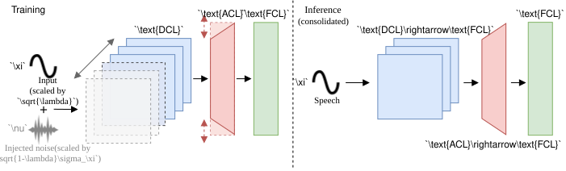
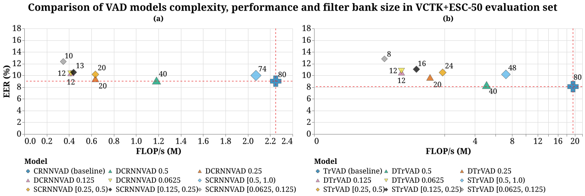
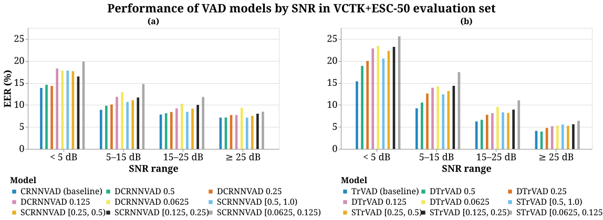
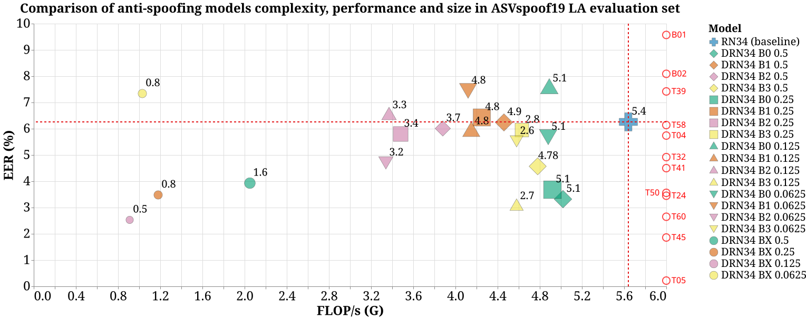

Esteban Gómez and Tom Bäckström
Department of Information and Communications Engineering, Aalto University, Espoo, Finland
{esteban.gomezmellado, tom.backstrom}@aalto.fi

This work has been submitted to the IEEE for possible publication.
In speech machine learning, neural network models are typically designed by choosing an architecture with fixed layer sizes and structure. These models are then trained to maximize performance on metrics aligned with the task's objective. While the overall architecture is usually guided by prior knowledge of the task, the sizes of individual layers are often chosen heuristically.
However, this approach does not guarantee an optimal trade-off between performance and computational complexity; consequently, post hoc methods such as weight quantization or model pruning are typically employed to reduce computational cost. This occurs because stochastic gradient descent (SGD) methods can only optimize differentiable functions, while factors influencing computational complexity, such as layer sizes and floating-point operations per second (FLOP/s), are non-differentiable and require modifying the model structure during training.
We propose a reparameterization technique based on feature noise injection that enables joint optimization of performance and computational complexity during training using SGD-based methods. Unlike traditional pruning methods, our approach allows the model size to be dynamically optimized for a target performance-complexity trade-off, without relying on heuristic criteria to select which weights or structures to remove.
We demonstrate the effectiveness of our method through three case studies, including a synthetic example and two practical real-world applications: voice activity detection and audio anti-spoofing. The code related to our work is publicly available to encourage further research.
Speech machine learning Low-complexity Voice activity detection Deep fake detection
The numeric data underlying the figures reported in the paper is made available as tabular data (e.g., CSV) for the community, so it can be reused as a reference point for further research. Only figures based on numeric measurements are listed below; illustrative or conceptual figures are not included. Click a figure number below to view it alongside its associated data table, and use the download button to obtain the corresponding CSV file.

Data for Fig. 6 (Comparison of VAD models complexity, performance and filter bank size in VCTK+ESC-50 evaluation set). "-" denotes fields not applicable to a given model (baselines).
| Loading table… |

Data for Fig. 7 (Performance of VAD models by SNR in VCTK+ESC-50 evaluation set).
| Loading table… |

Data for Fig. 9 (Comparison of anti-spoofing models complexity, performance and size in ASVSpoof19 LA evaluation set). "N/A" denotes fields not applicable to a given model and "Not reported" denotes values not included in the challenge results.
| Loading table… |
The calculations presented in this publication were carried out using the computer resources of the Aalto University of Science “Science-IT” project.